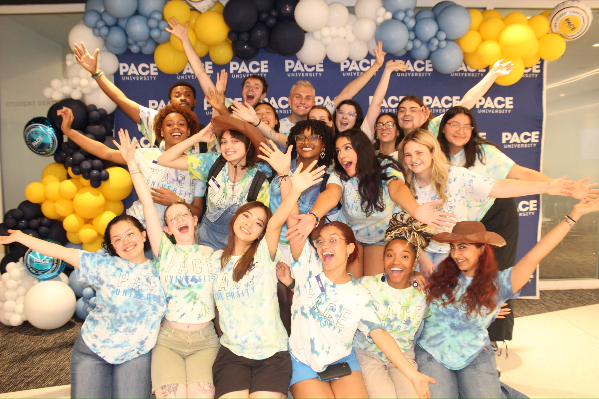
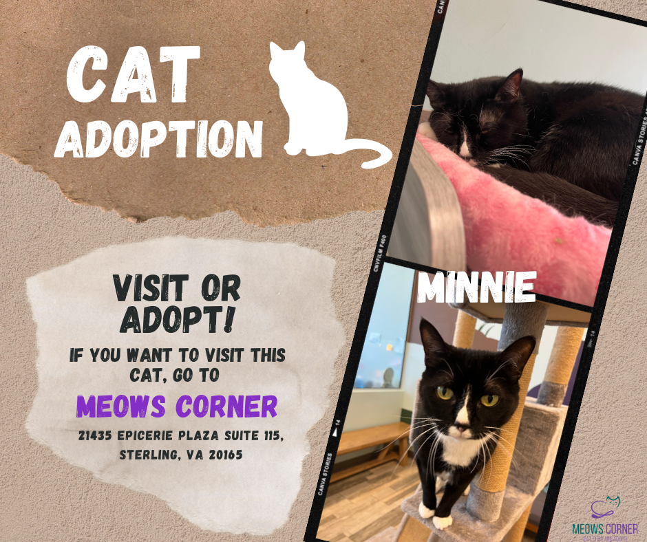
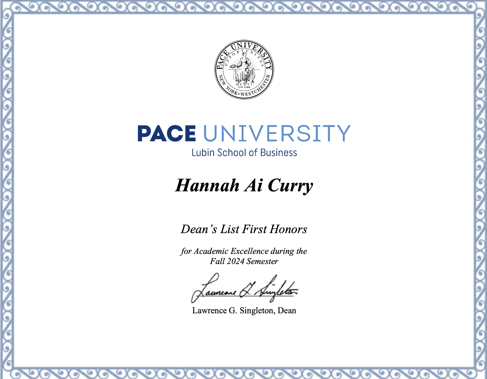

Experience
I have worked three jobs at Pace University. Serving as a role model for over 2000+ students. I organize nad lead business events for 300+ international students to manage program preparation. As well, I provide administrative support, which includes reviewing program dcouments, database management, and technology support. The jobs I worked at Pace University include:
- Center for Global Business Programs Assistant Intern (Current)
- Welcome Center Ambassador (Current)
- Orientation Leader (Summer 2024)
Academic Projects
As well, I have worked on several academic projects that include, running my own simulated cafe where I analyzed and assess business P&L statements, strategiies, and prepare marketing plans. I have also created marketing campaigns for a local cat cafe, increasing te number of cats to be adopted in a week. Finally, I have partipcated in Pace University's Social Justice Week by intervieiwng the Effects of Coivd-19 on the Asian American Community. The projects are as said:
- BizCafe Simulator
- Meows Corner Capstone
- Social Justice Week
Skills & Certifications
In addition to my experience and projects, I have developed various skills and obtained several certifcations.
- Japanese (Professional Working Proficiency)
- Microsoft Office
- W!SE Financial Literacy Certification
- Work-Based Learning Experience Certification
- NRF National Prof. Cert. in Cust. Service
- Pace University Dean's List First Honors (Fall 2023, Spring 2024, Fall 2024)
Interests
The following are my interests and hobbies I enjoy participating me to have a better idea of who I am as a person:
- FPS Games
- Since my Freshman year of college, I have been on Pace University's Esports team on Dinaco Blue. Serving as a Team Captain as my team, leading us to place 3rd place regionally in our division.
- Foodie
- Being in NYC opens a multitude of new cuisines to experience and eat. One of my favorite things to do in NYC is trying different foods from around the world to gain deeper appreciation into countries cultures.
- Upthrifting
- I really enjoy clothing and being able to express yourself through how you dress. What's important, however, is to remember to be mindful of our planet too. That is why I have modeled for a up-cycling, vintage, clothing company called "Sleep Thirsty" to find old clothes a new home.
For more information about me, visit my LinkedIn